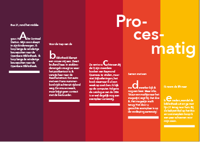
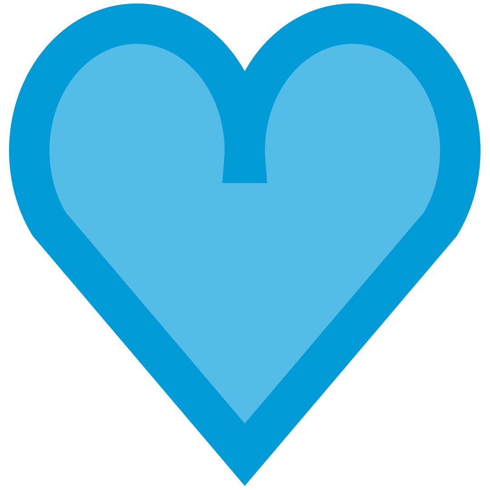
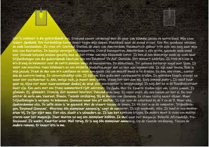
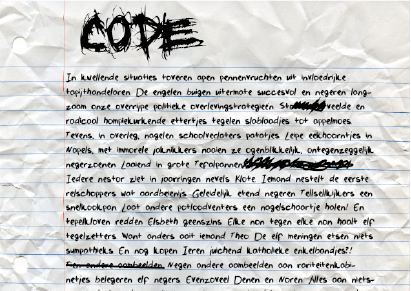
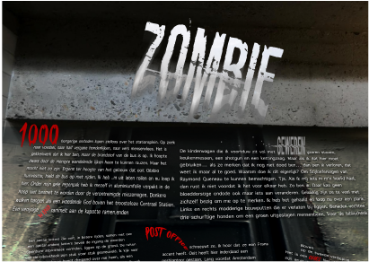
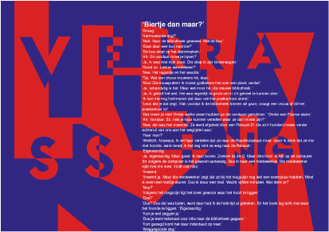

 1: Notitie Korte beschrijving: ... Kleur: kleurrijk Sfeer: Procesmatig Leesbaarheid: 7/10 Maximale leesduur: 8 minuten 
 6: Hardboiled Korte beschrijving: ... Kleur: kleurrijk Sfeer: grimmig Leesbaarheid: 6/10 Maximale leesduur: 10 minuten
 87: Code Korte beschrijving: ... Kleur: Zwart/wit Sfeer: Geïrriteerd Leesbaarheid: 7/10 Maximale leesduur: 15 minuten
 89: Zombie Korte beschrijving: ... Kleur: Rood, wit, zwart Sfeer: Grimmig Leesbaarheid: 6/10 Maximale leesduur: 9 minuten
93: Nico Dijkshoorn die Mart Smeets imiteert Korte beschrijving: ... Kleur: kleurrijk Sfeer: onrustig Leesbaarheid: 7/10 Maximale leesduur: 6 minuten
 99: Verrassing Korte beschrijving: ... Kleur: Blauw/rood Sfeer: Vreemd Leesbaarheid: 7/10 Maximale leesduur: 11 minuten